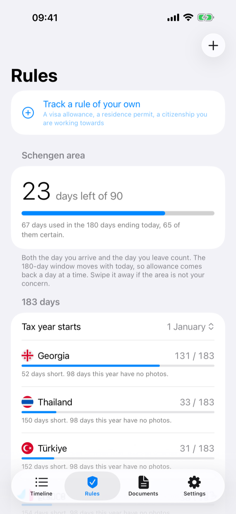
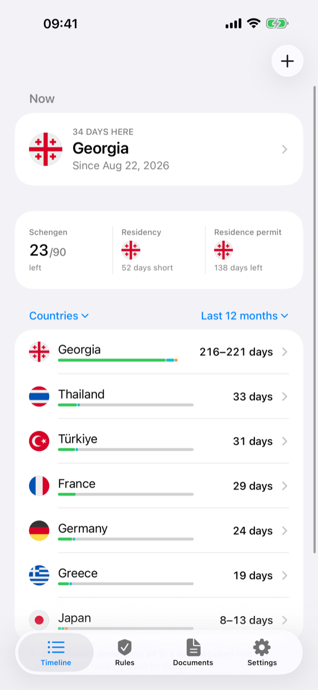
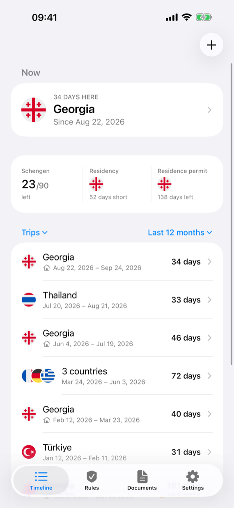

Turkey stay calculator
How long can you stay in Turkey?
Turkey counts 90 days in any 180 for most visa-free passports, and Russian citizens also may not stay more than 60 days on one entry. Pick your passport, enter your trips, and see the last day you can stay.
Your photos already know these dates
Typing trips in from memory is where a count goes wrong. Presence, for iPhone and iPad, reads the dates and places your camera already saved and works out every day in every country — then keeps the count of each limit up to date, the visa on your own passport included, and tells you before it runs out. On your device, without an account.
Get Presence on the App Store


| Passport | How long |
|---|---|
| Russia | 60 days per entry, and 90 days in any 180 |
| Ukraine, EU, UK, US and most other visa-free passports | 90 days in any 180 |
Does leaving Turkey reset the count?
No. The 180 days look back from each day, so a short trip out does not give you a new 90. For Russian citizens a new entry does start a new 60, but within what the 90 in 180 still allows.
An example?
A Russian citizen spends 60 days in Turkey, leaves, and comes back ten days later. The 60 days are still in the last 180, so only 30 more are allowed — the calculator shows the exact last day.
How do I stay longer?
With a residence permit, applied for in Turkey before your visa-free days run out.